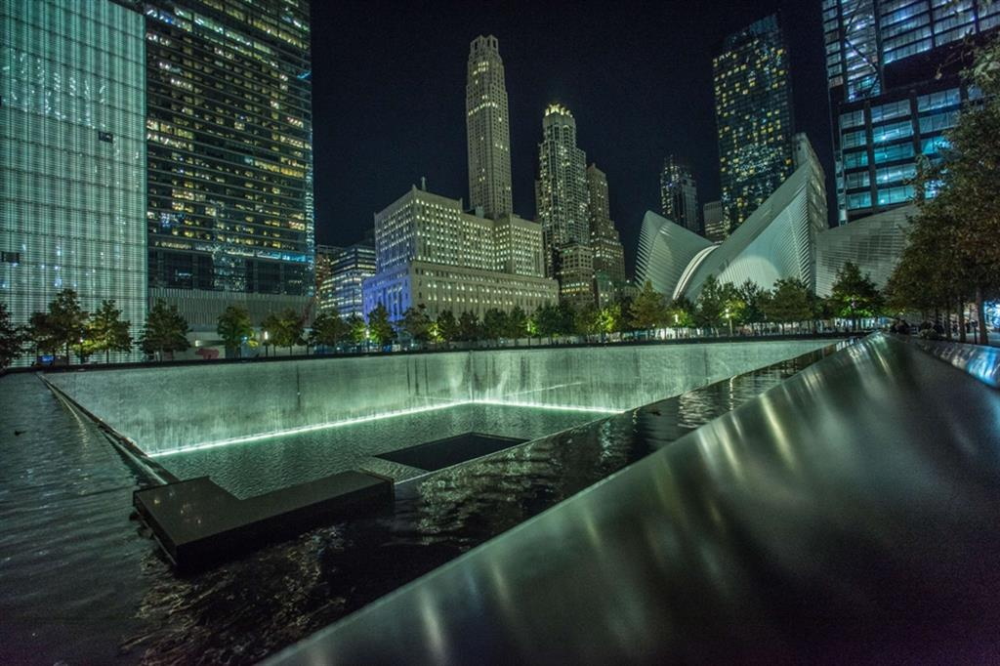

NEW YORK
Ecco a voi alcuni posti da visitare a Miami
- Times Square è una delle principali piazze di New York. Si estende dalla West 42nd Street alla West 47th Street. Times Square è formata dagli isolati compresi tra la Sixth Avenue e la Eighth Avenue e tra la West 40th Street e la West 53rd Street formando la parte più a ovest dell'area commerciale di Midtown Manhattan.
Pur essendo più piccola della Piazza Rossa a Mosca, della Puerta del Sol a Madrid, di Trafalgar Square a Londra o di Piazza Tienanmen a Pechino, Times Square ha tuttavia raggiunto lo status di icona paesaggistica ed è divenuta un simbolo della sua città, nonché una delle aree pedonali più trafficate del mondo. Times Square è nota soprattutto per i grandi e numerosi cartelloni pubblicitari animati e digitali.

- Il World Trade Center (letteralmente, Centro di Commercio Mondiale) di New York era un complesso di sette edifici per la maggior parte progettati dall'architetto Minoru Yamasaki e dall'ingegnere Leslie Robertson e sviluppato dall'Autorità Portuale di New York e New Jersey. Il complesso era situato nella parte sud dell'isola di Manhattan, nel Lower Manhattan, ed era famoso in particolare per l'eccezionale evidenza delle Torri Gemelle (Twin Towers), inaugurate il 4 aprile 1973 e distrutte negli attentati dell'11 settembre 2001. Con il crollo delle torri (denominate WTC 1 e WTC 2) anche gli edifici minori (WTC 3, WTC 4, WTC 5, WTC 6 e WTC 7) furono distrutti o danneggiati irreversibilmente e quindi abbattuti nei mesi successivi. Attualmente, il sito è stato ricostruito con cinque nuovi grattacieli, un memoriale e museo per le vittime degli attacchi e un terminal di trasporto.
Al momento del completamento, l'originale One World Trade Center (la Torre Nord) e il Two World Trade Center (la Torre Sud), noti popolarmente come "Torri Gemelle", erano i grattacieli più alti del mondo. Gli altri edifici includevano il WTC 3 (Marriott World Trade Center), il WTC 4 (dove oltre agli uffici operavano varie borse valori), WTC 5, WTC 6 (che conteneva l'Ufficio doganale e di protezione delle frontiere) e il WTC 7. Tutti questi edifici furono costruiti tra il 1970 e il 1985, per un costo di $400 milioni di dollari (2,3 miliardi di dollari del 2014). Il complesso era situato nel cuore del distretto finanziario di New York, con uno spazio totale di 1,24 milioni di metri quadrati per uffici.

torna alla HOME